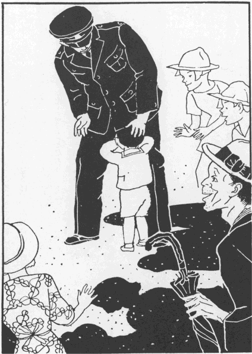

銅像と老人
小川未明
田舎に住んでいる人々は、遠い都のことをいろいろに想像するのでした。そして、ぜひ一度いってみたいと、思わないものはないのであります。
「ああ私も、足・腰のじょうぶなうちに、東京見物をしてきたいものだが、なかなかそう思ってもいざ出かけるということは、できないものだ。」と、おじいさんは、いいました。
「おじいさん、また、秋になると忙しくなりますが、いまは、ちょうど暇のときですから、すこし暑いが、東京見物にいっておいでなさいませんか……。」と、せがれがいいました。
おじいさんは、うれしそうに笑いながら、
「なに、いまいかなくとも、また、そのうちに、いいおりがあるにちがいないから、そのときやってもらおう。」と、答えました。
若いものたちは、平常、おじいさんが、この年になるまで働いているのを、感謝していましたから、みんなが、口をそろえて、
「おじいさん、いっておいでなさいまし。」といいました。
「しかし、おじいさん、一人でゆかれますか。それが、心配です。東京は、電車や、自動車が通ったりしますから、それが心配です。」と、せがれが、いいました。
おじいさんは、まだ、きかぬ気の、がんこそうな体を揺すって、日に焼けた顔で、笑いながら、
「なに、かえって、一人というものは、いいものだ、気楽でな。まだ、年を取っても、手足はきくし、目も見えれば、耳もよく聞こえる。そんな、心配はいらない。私は、いっても、じきに帰ってくるから……。」といいました。
「じきに、お帰りなさらんでも、留守はだいじょうぶです。おじいさんがいられなくても、私たちだけで精を出せば、田や畑のことはできます。ゆっくりと、いろいろなところを見物して、おいでなさい。」
「おじいさん、ほんとうに、ごゆっくりしておいでなさいまし。」と、せがれの女房がいいました。
「おじいさん、僕もつれていっておくれよ。」と、そばで、この話を聞いていた、孫の正吉がいいました。
おじいさんは、正吉の頭をなでて、
「おまえなどは、大きくなれば、いくらでもいって見られる。私が東京見物にいったら、なにを土産に買ってきてやったらいいものかのう……。」
「ねえ、おじいさん、僕も、つれていっておくれよ……。」
「ばか、おじいさんは、幾日も泊まってきなさるんだ。」
このとき、おじいさんは、東京のにぎやかさを、ちょっと頭の中で想像しました。そして、もう、その人たちの雑踏している中を分けて、公園や、名所や、方々の建物を見物に歩いている、自らの姿を目に描いていたのです。
「西郷さんの銅像も、いったらぜひ見てきたいものだ。」と思いました。
おじいさんは、若い時代から、この英雄の物語を聞いて、深く崇拝していました。そして、上野の公園へいったら、かならず、この銅像を見てこなければならぬということも知っていました。
「そういってくれるなら、一週間ばかり、田や畑の暇のうちに、見物してこようか……。」と、おじいさんはいいました。
「そう、なさいまし。」
それで、家じゅうのものは、みんな、おじいさんの仕度をてつだいました。いよいよ仕度もできて、おじいさんは、東京見物に出かけることになりました。
「正坊や、いってくるぞ。帰りには、たくさん土産を持ってきてやるから、おとなしくして待っているのだぞ。」と、おじいさんは、正吉の頭をなでました。そして、おじいさんは、自分の故郷に別れを告げたのです。
汽車は、おじいさんを東京へつれてきました。田舎にいて、思ったより、都会のにぎやかなこと、人間や、自動車の往来のはげしいことに目をみはりました。それからというもの、毎日、宿屋から出ては、巡査に道を聞いたり、人にたずねたりして、あちら、こちらと見物して歩きました。ある夜、横になって、疲れた足をたたきながら、
「遊んで歩くのも、なかなか骨のおれることだ。田圃へ出て働くのと変わりはない。明日は、上野の山へいって、西郷さんの銅像を見てこよう……。」と、おじいさんは、独りごとをいって床にはいって休みました。
その晩、おじいさんは、家にいて、正坊を相手にして、話をしている夢を見ました。
夜が明けると、いい天気でした。そして、暑くなりそうでした。しかし、おじいさんは、電車にも乗らず、街の中を見物して、上野の方を指してきたのです。高くつづいた石段を踏んで、上野の山に登ると、東京の街が、はてしなく、目の下に、見おろされました。しばらく、そこでおじいさんは、あたりをながめていました。
「西郷さんの銅像は、どちらでございますか？」と、おじいさんは人にたずねました。
「あれですよ。」と、その人は、笑って、あちらの方を指さしました。その人は、田舎から、見物に出てきたのだなとうなずいて、おじいさんのようすをながめて去りました。
「なるほど。」と、おじいさんは、銅像を目あてに歩いてゆきました。そして、心の中で、
「これが、偉いお方の銅像かな……。」と、つぶやいたのです。
ちょうどこのとき、銅像の下のところで、人だかりがしてわいわいといっていました。田舎の静かなところに生活したおじいさんには、何事も珍しかったのでした。
おじいさんは、目を銅像から放すと、その人だかりの方へ寄って、肩と肩の間を分けるようにして、のぞいてみたのでした。すると、小さな男の子が、迷子になったとみえて、悲しそうに、声をあげて泣いている。それを巡査がすかしたり、なだめたりしていたのでありました。
これを見ると、おじいさんは、びっくりして、「正坊じゃないか……。」といって、もうすこしで飛び出そうとしたのです。

清水良雄・絵［＃「清水良雄・絵」はキャプション］
「しかし、孫が、どうして一人で、こんなところへきているはずがあろう……。」と、おじいさんは、すぐに思い返した。けれど、見れば見るほど、かわいい正吉に、年ごろから、頭かっこうまでよく似ていたのでした。
「かわいそうに、どうしたということだろう……。」
おじいさんは、故郷にいる孫の姿を目に描きました。すると、いつのまにか、その目には熱い涙が、いっぱいたまっていました。
迷子は、お巡りさんにつれられて、あちらへゆきました。その後から、ぞろぞろと人々がついてゆきます。
「どこへゆくのだろう？」
おじいさんは、まだ、なんとなく、その子供に心が惹かれたので、自分もみんなといっしょに後からついてゆきました。
いつしか、石段を降りて、電車の通っている方へまごついてゆきました。おじいさんの頭の中は、
「どこの子だろう……かわいそうに。そして、親たちは、また、なんという不注意なんだろう……。うちの正坊は、いまごろどうしているかしらん……。」ということで、いっぱいでありました。
おじいさんは、どこまで、自分は、ついてゆくのだ？ ということに気がつきました。そのときは、街の真ん中にきていたのです。ふたたび、上野の山へ上る気にもなれず、宿へ帰ってまいりました。
「天気ぐあいはいいようだが、圃のものは、いまごろどんなになったろう？」と、故郷のことが考えられました。おじいさんは、土産物などを買って、帰りを急いだのでありました。
やがて、おじいさんは、村に帰ってみんなとくつろいで、話をしていました。
「おじいさん、西郷さんの銅像をごらんになりましたか。」と、せがれがたずねた。
「おお見てきたとも……。」と、おじいさんは答えた。
「犬をつれていられるといいますが。」
「犬か……。」
「小さな犬ですか？」
おじいさんは、それを見なかったのでした。西郷さんの顔も、ちょっと見たばかりで、迷子のほうに気をとられたのでした。子供のようすが、孫の正吉に、あまりよく似ていたので……銅像のことなど忘れてしまった。そして、もう一度よく、銅像を見ようと思っているうちに、街へ出てしまって、それきりになってしまったのです。
「犬は、見なかったな……。」
「そんなに、小さな犬ですか？」
こんな話をしていると、遊びにきていた、近所の男は、二、三年前、東京へいって、よく西郷の銅像を見てきたので、
「なに、あれが目に入らないはずがないのだがなあ……。」と、そばであきれた顔をしました。
「おじいさんは、なにを見てきなすったのだろう……。」と、せがれの女房はいって、おかしがりました。
おじいさんは、さすがにきまりの悪い思いをしました。これを見た、せがれは、いくら達者のように見えても、年をとられて、もうろくなされたのかしらんと、老父の身の上を案じて、なんとなくそれから話もはずまず、物悲しくなったのです。
その後、おじいさんが、上野の公園で、迷子を見て、それが孫に似ていたということを物語ったとき、家内のものははじめて、銅像をよく見なかった理由がわかって、それほどまでに、孫を思っていてくださるかということと、おじいさんは、まだもうろくされたのでないということを知って、大いに喜んだのであります。
底本：「定本小川未明童話全集 8」講談社
1977（昭和52）年6月10日第1刷発行
1982（昭和57）年9月10日第6刷発行
底本の親本：「青空の下の原っぱ」六文館
1932（昭和7）年3月
※表題は底本では、「銅像と老人」となっています。
入力：特定非営利活動法人はるかぜ
校正：津村田悟
2021年2月26日作成
青空文庫作成ファイル：
このファイルは、インターネットの図書館、青空文庫（https://www.aozora.gr.jp/）で作られました。入力、校正、制作にあたったのは、ボランティアの皆さんです。
●表記について
- このファイルは W3C 勧告 XHTML1.1 にそった形式で作成されています。
- ［＃…］は、入力者による注を表す記号です。